산림기사 (2019-03-03 기출문제)
1과목: 조림학
1. 임지가 비옥하거나 식재목이 광선을 많이 요구할 때 실시하며, 소나무나 일본잎갈나무등의 조림지에 가장 적합한 풀베기 방법은?
- 줄깎기
- 둘레깎기
- 전면깎기
- 솎아깎기
(정답률: 80%)

2. 종자 결실 주기가 가장 긴 수종은?
- Alnus japonica
- Abies holophylla
- Betula platyphylla
- Robinia pseudoacacia
(정답률: 61%)
3. 천연림 보육과정에서 간벌작업 시 미래목 관리 방법으로 옳은 것은?
- 미래목간의 거리는 2m 정도로 한다.
- 활엽수는 100~150본/ha 정도로 선정한다.
- 침엽수는 200~300본/ha 정도로 선정한다.
- 가슴높이에서 10cm의 폭으로 적색 수성 페인트를 둘러서 표시한다.
(정답률: 60%)
4. 종자의 검사 방법에 대한 설명으로 옳은 것은?
- 효율은 발아율과 순량율의 곱으로 계산한다.
- 실중은 종자 1L에 대한 무게를 kg 단위로 나타낸 것이다.
- 순량율은 전체시료무게를 순정종자무게에 대한 백분율로 나타낸 것이다.
- 발아세는발아시험기간 동안 발아입수를 시료수에 대한 백분율로 나타낸 것이다.
(정답률: 75%)
5. 묘포에서 시비에 대한 설명으로 옳은 것은?
- 시비는 무기질 비료, 추비는 속효성 비료를 사용하는 것이 좋다.
- 시비는 유기질 비료, 추비는 완효성 비료를 사용하는 것이 좋다.
- 시비는 완효성 비료, 추비는 유기질 비료를 사용하는 것이 좋다.
- 시비는 속효성 비료, 추비는 무기질 비료를 사용하는 것이 좋다.
(정답률: 71%)
6. 생가지치기를 피해야 하는 수종이 아닌 것은?
- Acer palmatum
- Zelkova serrata
- Prunus serrulata
- Populus davidiana
(정답률: 55%)
7. 산림대에 대한 설명으로 옳은 것은?
- 우리나라의 남한 지역에는 한 대림이 존재하지 않는다.
- 우리나라 난대림의 주요 특징 수종으로 가시나무가 있다.
- 열대림은 넓은 지역에 걸쳐 단일 수종으로 단순림을 구성할 떄가 많다.
- 지중해 연안 지역의 산림은 우리나라 온대 북부의 산림 구성과 유사하다.
(정답률: 75%)
8. 수목의 광보상점에 대한 설명으로 옳은 것은?
- 호흡에 의한 이산화탄소 방출량이 최대인 경우의 광도이다.
- 광합성에 의한 이산화탄소 흡수량이 최대인 경우의 광도이다.
- 광합성에 의한 이산화탄소 흡수량이 최소인 경우의 광도이다.
- 호흡에 의한 이산화탄소 방출량과 광합성에 의한 이산화탄소 흡수량이 동일한 경우의 광도이다.
(정답률: 74%)
9. 여름 기온이 높고 강수량이 풍부한 낙엽활엽수림에 주로 분포하는 우리나라의 산림토양은?
- 갈색산림토양
- 암적색산림토양
- 적황색산림토양
- 희갈색산림토양
(정답률: 71%)
10. 파종상에 짚덮기를 하는 이유로 옳지 않은 것은?
- 잡초의 발생을 억제한다.
- 약제 살포의 효과를 증대시킨다.
- 빗물로 인한 흙과 종자의 유실을 막는다.
- 파종상의 습도를 높여 발아를 촉진시킨다.
(정답률: 79%)
11. 옥신의 생리적 효과에 대한 설명으로 옳지 않은 것은?
- 뿌리 생장
- 정아 우세
- 제초제 효과
- 탈리현상 촉진
(정답률: 65%)
12. 산벌작업에 대한 설명으로 옳은 것은?
- 인공적으로 조림하여 갱신한다.
- 왜림을 조성하기 위한 작업이다.
- 음수 수종은 갱신이 어려운 작업이다.
- 예비벌, 하종벌, 후벌 순서로 작업을 진행한다.
(정답률: 83%)
13. 잎의 끝이 두 갈래로 갈라지는 수종은?
- 비자나무
- 구상나무
- 가문비나무
- 일본잎갈나무
(정답률: 65%)
14. 수분 부족 스트레스를 받은 수목의 일반적인 현상이 아닌 것은?
- 춘재 비율이 추재 비율보다 더 많아진다.
- 체내의 수분이 부족하여 팽압이 감소한다.
- ABA를 생산하기 시작해서 기공의 크기에 영향을 준다.
- 생화학적인 반응을 감소시켜 효소의 활동을 둔화시킨다.
(정답률: 72%)
15. 수목의 내음성에 대한 설명으로 옳지 않은 것은?
- 주목은 음수 수종이다.
- 소나무는 양수 수종이다.
- 수목이 햇빛을 좋아하는 정도이다.
- 수목이 그늘에서 견딜 수 있는 정보이다.
(정답률: 83%)
16. 천연하종갱신에 대한 설명으로 옳은 것은?
- 노동력과 비용이 많이 필요하다.
- 동령단순림으로 숲이 빠르게 성립한다.
- 조림지의 교란으로 토양 환경이 악화된다.
- 오랜 시간 동안 환경에 적응되어 숲 조성에 실패가 적다.
(정답률: 84%)
17. 택벌작업에 대한 설명으로 옳지 않은 것은?
- 보속수확이 가능하다.
- 음수 수종 갱신에 적합하다.
- 작업 과정에서 하층목의 손상 위험이 매우 작다.
- 임분 내에는 다양한 연령의 수목이 존재한다.
(정답률: 79%)
18. 조림용 묘목의 규격을 측정하는 기준이 아닌 것은?
- 간장
- 근원경
- 수관폭
- H/D율
(정답률: 57%)
19. 버드나무류나 사시나무류의 종자를 채취한 후 바로 파종하는 이유로 옳은 것은?
- 종자의 수명이 짧기 때문에
- 종자의 크기가 작기 때문에
- 종자의 발아력이 높기 때문에
- 종자가 바람에 잘 흩어지기 때문에
(정답률: 80%)
20. 편백에 대한 설명으로 옳지 않은 것은?
- 암수한그루이다.
- 편백나무과에 속한다.
- 성숙한 구과는 적갈색이다.
- 잎에 Y자형의 흰 기공선이 나타난다.
(정답률: 73%)
2과목: 산림보호학
21. 매미나방 방제 방법으로 옳지 않은 것은?
- 나무주사를 실시한다.
- 알덩어리는 4월 이전에 제거한다.
- 어린 유충시기에 살충제를 살포한다.
- Bt균, 핵다각체바이러스 등의 천적미생물을 이용한다.
(정답률: 57%)
22. 잎을 주로 가해하는 해충이 아닌 것은?
- 솔나방
- 박쥐나방
- 미국흰불나방
- 오리나무잎벌레
(정답률: 80%)
23. 수목의 외과적 치료 방법에 대한 설명으로 옳은 것은?
- 나무주사를 이용하는 방법이다.
- 부후병, 뿌리썩음병에는 효과가 없다.
- 뽕나무 오갈병, 오동나무 빗자루병에는 효과가 없다.
- 살균제 성분을 이용하여 수목 피해를 예방하는 것이다.
(정답률: 59%)
24. 상주로 인한 묘목의 피해를 예방하는 방법으로 옳지 않은 것은?
- 토양에 모래를 섞는다.
- 배수가 잘 되도록 한다.
- 낙엽 및 볏짚 등을 제거한다.
- 이른 봄에 뿌리 부위를 밟아준다.
(정답률: 73%)
25. 다음 설명에 해당하는 해충은?
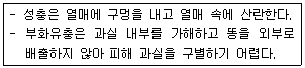
- 밤바구미
- 버들바구미
- 밤나무혹벌
- 복숭아명나방
(정답률: 78%)
26. 곤충의 피부 구조 중에서 한 개의 세포층으로 되어 있는 부분은?
- 외표피
- 원표피
- 기저막
- 진피층
(정답률: 46%)
27. 해충과 천적 연결이 옳지 않은 것은?
- 솔잎혹파리 - 솔노랑잎벌
- 천막벌레나방 - 독나방살이고치벌
- 미국흰불나방 - 나방살이납작맵시벌
- 버들재주나방 - 산누에살이납작맵시벌
(정답률: 65%)
28. 방제 대상이 아닌 곤충류에도 피해를 주기 가장 쉬운 농약은?
- 전착제
- 화학불임제
- 접촉살충제
- 침투성 살충제
(정답률: 74%)
29. 생물학적 방제에 이용하는 미생물과 해당 수목병의 연결이 옳지 않은 것은?
- Trichoderma harzianum - 모잘록병
- Tuberculina maxima - 잣나무 털녹병
- Agrobacterium radiobactor - 세균성 뿌리혹병
- Phleviopsis gigantea - 침엽수의 뿌리썩음병
(정답률: 43%)
30. 세균이 식물에 침입할 수 있는 자연 개구부에 해당하지 않는 것은?
- 각피
- 기공
- 피목
- 밀선
(정답률: 73%)
31. 수목에 피해를 주는 대기오염 물질이 아닌 것은?
- PAN
- 염화칼슘
- 질소산화물
- 아황산가스
(정답률: 66%)
32. 솔나방 방제 방법으로 옳지 않은 것은?
- 월동 후 유충 활동시기에 아바멕틴 유제를 나무주사한다.
- 성충 활동기에 수은등이나 유아등을 설치하여 성충을 유살한다.
- 7~8월 중순에 산란된 알 덩어리가 붙어 있는 가지를 잘라서 소각한다.
- 유충이 가해하는 시기에 디플루벤주론 수화제나 뷰프로페진 수화제를 살포한다.
(정답률: 34%)
33. 수목병을 진단하는 방법으로 옳지 않은 것은?
- 지표식물 이용
- 항원-항체 반응
- 테트라졸륨 검사
- Koch의 원칙 적용
(정답률: 77%)
34. 바이러스로 인한 수목병 방제 방법에 대한 설명으로 옳지 않은 것은?
- 생장점 배양을 한다.
- 묘포장에서는 윤작을 피한다.
- 잡초를 활용하여 간섭효과를 유발한다.
- 약독 바이러스를 발병 전에 미리 접종한다.
(정답률: 45%)
35. Septoria류 병원균에 의한 수목병에 대한 설명으로 옳지 않은 것은?
- 주로 잎에 작은 점무늬를 형성한다.
- 병든 잎에서 월동하여 1차 전염원이 된다.
- 자작나무 갈생점무늬병(갈반병)을 예로 들 수 있다.
- 병원균의 분생포자는 주로 곤충에 의해 전반된다.
(정답률: 61%)
36. 밤나무 줄기마름병 방제 방법으로 옳지 않은 것은?
- 질소 비료를 적게 준다.
- 내병성 품종을 재배한다.
- 상처 부위에 도포제를 바른다.
- 중간기주인 현호색을 제거한다.
(정답률: 66%)
37. 오리나무잎벌레 방제 방법으로 옳지 않은 것은?
- 알덩어리가 붙어 잇는 잎을 소각한다.
- 5~6월에 모여 사는 유충을 포살한다.
- 유충 발생기에 트리플루뮤론 수화제를 살포한다.
- 수은등이나 유아등을 설치하여 성충을 유인한다.
(정답률: 59%)
38. 그을음병에 대한 설명으로 옳지 않은 것은?
- 주로 잎의 앞면에 발생한다.
- 병원균이 주로 잎의 양분을 탈취한다.
- 잎 표면을 깨끗이 닦아 피해를 줄일 수 있다.
- 진딧물류 및 깍지벌레류가 번성할수록 잘 발생한다.
(정답률: 54%)
39. 솔잎혹파리의 월동 형태는?
- 알
- 유충
- 성충
- 번데기
(정답률: 70%)
40. 바다에서 부는 바람에 함유된 염분에 약한 수종으로만 올바르게 나열한 것은?
- 곰솔, 돈나무
- 삼나무, 벚나무
- 팽나무, 후박나무
- 자귀나무, 사철나무
(정답률: 72%)
3과목: 임업경영학
41. 소나무 임분의 벌기평균생장량이 6m3/ha이고 윤벌기가 50년이라고 할 때 이 임분의 법정연벌량과 법정수확률은 각각 얼마인가?
- 300m3/ha, 3%
- 300m3/ha, 4%
- 600m3/ha, 3%
- 600m3/ha, 4%
(정답률: 70%)
42. 측고기를 사용할 때 주의사항으로 옳지 않은 것은?
- 여러 방향에서 측정하면 오차를 줄일 수 있다.
- 경사지에서는 가급적 등고 위치에서 측정한다.
- 측정하고자 하는 나무 끝과 근원부가 잘 보이는 지점을 선정해야 한다.
- 측정위치가 멀면 오차도 생기므로 나무 높이의 절만 정도 떨어진 곳에서 측정하는 것이 좋다.
(정답률: 80%)
43. 동령림의 직경급별 임분구조는 전형적으로 어떤 형태로 나타나는가? (단, x축은 흉고직경, y축은 본수를 나타냄)
- J자 형태
- W자 형태
- 역 J자 형태
- 정규분포 형태
(정답률: 74%)
44. 임업경영 성과분석 방법으로 임업의존도 계산식에 해당하는 것은? (단, x축은 흉고직경, y축은 본수를 나타냄)
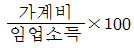
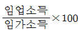
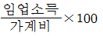
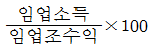
(정답률: 78%)
45. 연간 임산물 생산과 관련된 고정비가 2백만원, 변동비가 5천원, 판매단가가 6천원일 경우 손익분기점에 해당하는 임산물 생산량은?
- 181개
- 334개
- 2,000개
- 20,000개
(정답률: 56%)
46. 임반에 대한 설명으로 옳지 않은 것은?
- 산림구획의 골격을 형성한다.
- 고정적 시설을 따라 확정한다.
- 보조임반을 편성할 때는 인접한 임반의 보조번호를 부여한다.
- 임반의 표기는 경영계획구 상류에서 시계방향으로 표기를 시작한다.
(정답률: 67%)
47. 수확조정법에 대한 설명으로 옳지 않은 것은?
- Hufnagl법은 재적배분법의 일종이다.
- 전 산림면적을 윤벌기 연수와 동일하게 벌구로 나누고 매년 한 벌구씩 수확하는 방법을 구획윤벌법이라 한다.
- 토지의 생산력에 따라 개위면적을 산출하여 벌구면적을 조절, 연수확량을 균등하게 하는 방법을 비례구획윤벌법이라 한다.
- 전 임분을 윤벌기 연수의 1/2 이상 되는 연령의 것과 그 이하의 것으로 나누어 전자는 윤벌기의 전반에, 후자는 윤벌기 후반에 수확하는 방법을 Beckmann법이라 한다.
(정답률: 63%)
48. 임업기계의 감가상각비(D)를 정액법으로 구하는 공식으로 옳은 것은? (단, P:기계구입가격, S: 기계 폐기시의 잔존가치, N: 기계의 수명)
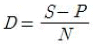
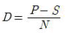
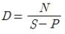
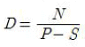
(정답률: 79%)
49. 자연휴양림을 조성 및 신청하려는 자가 제출하여야 하는 예정지의 위치도 축척 크기는?
- 1/5,000
- 1/15,000
- 1/25,000
- 1/50,000
(정답률: 67%)
50. 임분 재적 측정을 위하여 전 임목을 면 개의 계급으로 나누고 각 계급의 본수를 동일하게한 다음 각 계급에서 같은 수의 표준목을 선정하는 방법은?
- 단근법
- 우리히(Urich)법
- 하르티히(Hartig)법
- 드라우트(Draudt)법
(정답률: 73%)
51. 임업 이율의 종류 중 용도에 따른 이율에 해당하는 것은?
- 경영이율, 환원이율
- 단기이율, 장기이율
- 현실이율, 평정이율
- 공정이율, 시중이율
(정답률: 62%)
52. 산림 생산기간에 대한 설명으로 옳지 않은 것은?
- 회귀년은 택벌작업에 적용되는 용어이다.
- 회귀년은 길이와 연벌구역면적은 정비례한다.
- 벌채 후 갱신이 지연되는 경우 늦어지는 기간을 갱신기라고 한다.
- 어떤 임분에서 벌채와 동시에 갱신이 시작되는 경우 윤벌기와 윤벌령은 동일하다.
(정답률: 52%)
53. 산림휴양림의 조성 및 관리에 대한 설명으로 옳지 않은 것은?
- 방풍 및 방음형으로 관리할 수 있다.
- 공간이용지역과 자연유지지역으로 구분한다.
- 관리목표는 다양한 휴양기능을 발휘할 수 있는 특색 있는 산림조성이다.
- 법령에 의한 자연휴양림 휴양기능 증진을 위해 관리가 필요한 산림을 대상으로 한다.
(정답률: 63%)
54. 입업 투자계획의 경제성을 평가하는 방법이 아닌 것은?
- 순현재가치
- 편익비용비
- 내부수익률
- 수확표 분석
(정답률: 73%)
55. 임지를 취득한 후 조림 등 임목 육성에 알맞은 상태로 계량하는 데 소요되는 모든 비용의 후가에서 그 동안 수입의 후가를 공제한 가격을 무엇이라 하는가?
- 임지비용가
- 임지기망가
- 임지공제가
- 임지매매가
(정답률: 60%)
56. 임목의 평균생장량과 연년생장량에 대한 설명으로 옳지 않은 것은?
- 초기에는 연년생장량이 크다.
- 연년생장량의 극대점이 평균생장량의 극대점보다 빨리 온다.
- 연년생장량의 극대점에서 연년생장량과 평균생장량은 일치한다.
- 평균생장량의 극대점에서 평균생장량과 연년생장량은 일치한다.
(정답률: 71%)
57. 흉고직경 20cm, 수고 10m인 입목의 재적이 약 0.14m3인 경우 형수의 수치는?
- 약 0.11
- 약 0.14
- 약 0.45
- 약 0.55
(정답률: 59%)
58. 임목 평가에 적용하는 Glaser식에 대한 설명으로 옳은 것은?
- 임목 비용가법과 임목기망가법을 절충한 식이다.
- 임목 매매가법과 임목비용가법을 절충한 식이다.
- 임목 매매가법과 임목기망가법을 절충한 식이다.
- 예상이익을 현재가치로 환산하여 임목의 가치를 구하는 방법이다.
(정답률: 70%)
59. 다음 설명에 해당하는 용어는?
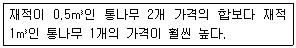
- 형질생장
- 가치생장
- 등귀생장
- 재적생장
(정답률: 66%)
60. 시장가역산법으로 임목가를 평정할 때 필요하지 않은 인자는?
- 집재비
- 운반비
- 조림 및 육림비
- 벌목 및 조재비
(정답률: 65%)
4과목: 임도공학
61. 산악지대의 임도 노선 선정 방식 중에서 지그재그 방식 또는 대각선 방식이 적당한 임도는?
- 사면임도
- 계곡임도
- 능선임도
- 평지임도
(정답률: 74%)
62. 임도의 최소곡선반지름 크기에 영향을 미치지 않는 인자는?
- 임도의 유효폭
- 반출목재의 길이
- 임도의 설계속도
- 임도의 종단기울기
(정답률: 56%)
63. 하베스터와 포워더를 이용한 작업시스템의 목재생산방법은?
- 전목생산방법
- 전간생산방법
- 단목생산방법
- 전간목생산방법
(정답률: 64%)
64. 아래 표는 수준측량에 의한 야장이다. 측점6의 지반고(m)는?
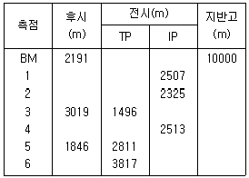
- 8838
- 8932
- 9864
- 9933
(정답률: 52%)
65. 접착성이 큰 점질토의 두꺼운 성토층 다짐에 가장 효과적인 롤러는?
- 탠덤 롤러
- 탬핑 롤러
- 머캐덤 롤러
- 타어어 롤러
(정답률: 77%)
66. 임도 설계 도면 제도에 대한 설명으로 옳은 것은?
- 평면도는 축적 1/1000으로 한다.
- 횡단면도는 축적 1/200으로 한다.
- 종단면도 상부에 곡선계획 등을 기입한다.
- 종단면도 축적은 횡 1/1000, 종1/200으로 한다.
(정답률: 69%)
67. 임도의 기능에 따른 종류가 아닌 것은?
- 임시임도
- 간선임도
- 작업임도
- 지선임도
(정답률: 73%)
68. 임도의 평면 선형에서 곡선의 종류가 아닌 것은?
- 단곡선
- 배향곡선
- 이중곡선
- 반향곡선
(정답률: 63%)
69. 곡선지가 아닌 임도의 유효너비 기준은?
- 2.5m
- 3m
- 5m
- 6m
(정답률: 74%)
70. 임도 설계 업무의 순서로 옳은 것은?
- 예비조사 → 답사 → 예측 → 실측 → 설계도 작성
- 예비조사 → 답사 → 실측 → 예측 → 설계도 작성
- 답사 → 예비조사 → 실측 → 예측 → 설계도 작성
- 답사 → 예비조사 → 예측 → 실측 → 설계도 작성
(정답률: 81%)
71. 시점의 표고가 100m, 종점의 표고가 500m 종단경사가 6%인 임도의 최단 길이는? (단, 임도 우회율은 적용하지 않음)
- 약 0.7km
- 약 2.4km
- 약 6.7km
- 약 24km
(정답률: 45%)
72. 임도망 계획에서 고려해야 할 사항으로 옳지 않은 것은?
- 운재비가 적게 들도록 한다.
- 운반량에 제한이 없도록 한다.
- 운재방법이 다원화되도록 한다.
- 계절에 따른 운재능력에 제한이 없도록 한다.
(정답률: 79%)
73. 배수관의 유속을 구하는 마닝(Manning)공식에서 R이 나타내는 것은?
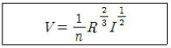
- 경심
- 조도계수
- 수면 기울기
- 배수관 반지름
(정답률: 61%)
74. 임도설치 대상지 우선선정 기준으로 옳지 않은 것은?
- 도시개발이 예정된 임지
- 산림보호 및 관리를 위해 필요한 임지
- 임도와 도로 연결을 위해 필요한 임지
- 산림휴양자원의 이용 또는 산촌진흥을 위해 필요한 임지
(정답률: 72%)
75. 임도 노선 설치 시 단곡선에서 교각이 30°31‘00“이고 곡선반지름이 150m 일 때 접선 길이는?
- 약 4.1m
- 약 8.8m
- 약 41m
- 약 88m
(정답률: 48%)
76. 컴퍼스 측량을 할 때 관측하지 않아도 되는 것은?
- 거리
- 표고
- 방위
- 방위각
(정답률: 60%)
77. 임도에서 성토한 경사면의 기울기 기준은?
- 1 : 0.3~0.8
- 1 : 0.5~1.2
- 1 : 0.8~1.5
- 1 : 1.2~2.0
(정답률: 34%)
78. 등고선에 대한 설명으로 옳지 않은 것은?
- 절벽 또는 굴인 경우 등고선이 교차한다.
- 최대경사의 방향은 등고선에 평행한 방향이다.
- 지표면의 경사가 일정하면 등고선 간격은 같고 평행하다.
- 일반적으로 등고선은 도중에 소실되지 않으며 폐합된다.
(정답률: 68%)
79. 임도의 곡선부에 외쪽기울기를 설치하는 주요 목적은?
- 배수 원활
- 노면 보호
- 시거 확보
- 안전 운행
(정답률: 49%)
80. 임도의 노체 구성 순서로 옳은 것은?
- 노반 → 기층 → 노상 → 표층
- 노상 → 기층 → 노반 → 표층
- 노반 → 노상 → 기층 → 표층
- 노상 → 노반 → 기층 → 표층
(정답률: 76%)
5과목: 사방공학
81. 돌쌓기 방법으로 비교적 규격이 일정한 막깬돌이나 견치돌을 이용하며, 층을 형성하지 않기 때문에 막쌓기라고도 하는 것은?
- 골쌓기
- 켜쌓기
- 찰쌓기
- 메쌓기
(정답률: 47%)
82. 다음 설명에 해당하는 중력침식의 유형은?
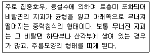
- 산붕
- 포락
- 이류
- 붕락
(정답률: 54%)
83. 산지 침식의 종류로 가속침식에 해당하는 것은?
- 자연침식
- 정상침식
- 붕괴형 침식
- 지질학적 침식
(정답률: 69%)
84. 비탈다듬기공사에서 상단의 단면적이 10m2, 하단의 단면적이 20m2이고 상하단의 거리가 10m일 때 평균 단면적법으로 토사량을 구하면?
- 150m3
- 300m3
- 1500m3
- 3000m3
(정답률: 60%)
85. 사방댐의 위치로 적합하지 않은 곳은?
- 상류부가 넓고 댐자리가 좁은 곳
- 계상 및 양안이 견고한 암반인 곳
- 본류와 지류가 합류하는 지점의 하류
- 횡침식으로 인한 계상 저하가 예상되는 곳
(정답률: 45%)
86. 황폐계천에서 유수로 인한 계안의 횡침식을 방지하고 산각의 안정을 도모하기 위하여 계류 흐름방향을 따라서 축설하는 사방 공작물은?
- 수제
- 골막이
- 기슭막이
- 바닥막이
(정답률: 52%)
87. 견고한 돌쌓기 공사에서 사용될 수 있도록 특별한 규격으로 다듬은 것으로 단단하고 치밀한 석재는?
- 견치돌
- 막깬돌
- 호박돌
- 야면석
(정답률: 81%)
88. 사방댐의 안정 계산에 필요한 하중 및 수치중에서 댐 높이가 15m 미만일 때 고려하지 않은 것은?
- 자중
- 정수압
- 퇴사압
- 양압력
(정답률: 55%)
89. 퇴사퇴적구역에 대한 설명으로 옳지 않은 것은?
- 유수의 유송력이 대부분 상실되는 지점이다.
- 침적지대 또는 사력퇴적지역 등으로 불린다.
- 황폐계류의 최하부로서 계상물매가 급하고 계폭이 좁다.
- 유송토사의 대부분이 퇴적되어 계상이 높아지게 된다.
(정답률: 77%)
90. 빗물에 의한 침식의 발달 단계로 옳은 것은?
- 우격침식 → 면상침식 → 누구침식 → 구곡침식
- 면상침식 → 우격침식 → 누구침식 → 구곡침식
- 우격침식 → 면상침식 → 구곡침식 → 누구침식
- 면상침식 → 우격침식 → 구곡침식 → 누구침식
(정답률: 80%)
91. 산지사방 중 씨뿌리기에 사용되는 식생에 대한 설명으로 옳지 않은 것은?
- 초본류는 생장이 빠르고 엽량이 많은 것이 좋다.
- 초본류는 일년생으로 번식력이 왕성한 것이 좋다.
- 목본류는 근계가 잘 발달하고 토양의 긴박효과가 있어야 한다.
- 목본류는 척악지나 환경조건에 대한 적응성이나 저항성이 커야 한다.
(정답률: 74%)
92. 암석 산지나 암벽 녹화용으로 가장 부적합한 수종은?
- 병꽃나무
- 눈향나무
- 노간주나무
- 상수리나무
(정답률: 76%)
93. 비탈파종녹화를 위한 파종량 산출식으로 옳은 것은? (단, W는 파종량(g/m2), S는 평균입수(입/g), B는 발아율(%), P는 순량율(%), C는 발생기대본수(본/m2))
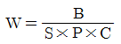
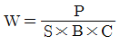
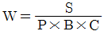
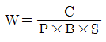
(정답률: 69%)
94. 기울기가 완만하고 유량과 토사유송이 적은 곳에 설치하는 수로로 가장 적합한 것은?
- 떼붙임수로
- 찰붙임수로
- 메붙임수로
- 콘크리트수로
(정답률: 70%)
95. 산지사방에서 녹화공사에 해당하지 않은 것은?
- 단쌓기
- 사초심기
- 등고선구공법
- 산비탈바자얽기
(정답률: 67%)
96. 해안사방공의 주요 공종에 해당하지 않는 것은?
- 파도막이
- 모래덮기
- 새집공법
- 퇴사울세우기
(정답률: 71%)
97. 다음 설명에 가장 적합한 불투과형 중력식 사방댐은?
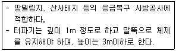
- 흙댐
- 돌망태댐
- 콘크리트댐
- 콘크리트틀댐
(정답률: 62%)
98. 유량이 40m3/s이고, 평균유속이 5m/s일 때 수로의 횡단면적(m2)은?
- 0.5
- 8
- 45
- 200
(정답률: 75%)
99. 초기황폐지 단계에서 복구되지 않으면 점점더 급속히 악화되어 가까운 장래에 민둥산이나 붕괴지가 될 위험성이 있는 상태는?
- 척악임지
- 임간나지
- 황폐 이행지
- 특수 황폐지
(정답률: 69%)
100. 바닥막이 시공 장소로 적합하지 않은 것은?
- 합류 지점의 하류
- 계상 굴곡부의 상류
- 계상이 낮아질 위험이 있는 곳
- 종침식과 횡침식이 발생하는 지역의 하류부
(정답률: 63%)